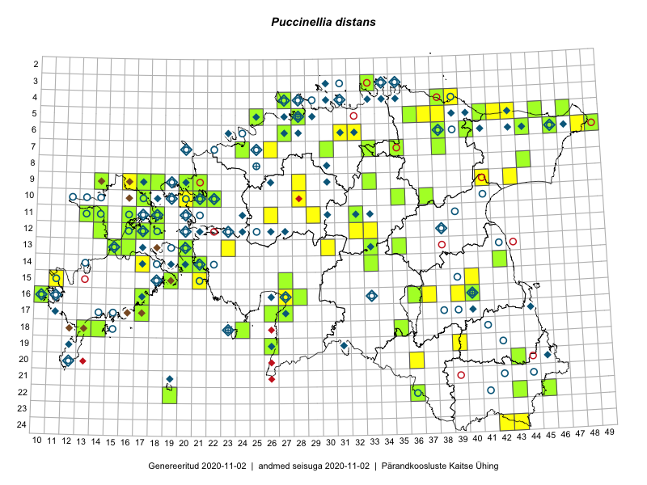

Puccinellia distans
Uuendatud: 2016-12-02
Kaardile koondatud taksonid: Puccinellia distans (Jacq.) Parl.; Puccinellia distans subsp. distans (Jacq.) Parl.

Kaart põhineb 58 kirjel, neist vaatlusi 50 ja eksemplare 8. Taksonit on leitud 38 ruudust.
Kuvatud viited 20 esimesele andmebaasikirjele, ülejäänud PlutoFis
- Toomas Kukk, Eerik Leibak: 2015-08-12: 09-17: ala
- Toomas Kukk, Eerik Leibak: 2015-08-10: 09-14: ala
- Ott Luuk, Peedu Saar: 2015-08-13: 24-43: ala
- Peedu Saar, Ott Luuk: 2015-08-13: 24-42: GPS punkt
- Peedu Saar, Ott Luuk: 2015-08-13: 24-42: ala
- Toomas Kukk: 2014-06-21: 16-10: ala
- Meeli Mesipuu: 2015-07-09: 13-16: ala
- Meeli Mesipuu: 2015-07-09: 13-16: GPS punkt
- Ott Luuk, Toivo Sepp: 2015-08-20: 11-29: ala
- Mari Reitalu, Oliver Parrest: 2015-07-16: 15-11: ala
- Sirje Azarov, Mari Reitalu: 2015-06-22: 16-10: ala
- Sirje Azarov, Mari Reitalu: 2015-06-22: 16-10: GPS punkt
- Kaili Orav, Silvia Pihu: 2015-07-20: 06-38: ala
- Ott Luuk, Toivo Sepp: 2015-08-20: 11-29: GPS punkt
- Ott Luuk, Peedu Saar: 2014-07-29: 10-20: ala
- Tõnu Ploompuu, Anna-Grete Rebane, Hanna-Eliisa Luts: 2015-07-20: 10-20: ala
- Hanna-Eliisa Luts, Tõnu Ploompuu: 2015-07-28: 11-26: ala
- Tõnu Ploompuu: 2015-08-11: 06-27: ala
- Tõnu Ploompuu: 2015-08-21: 10-21: ala
- Silvia Pihu: 2015-07-03: 22-19: ala